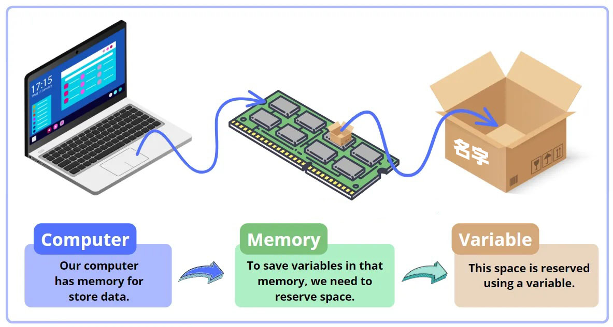

变量与常量(20道)
量是什么
- 动词:测量、计量、丈量
- 名词：容器
变量

变量是什么
定义：
- 变量是命名的内存地址。
- 变量是数据的别名。
- 变量是程序引用数据的一种方式。
你可以理解为：变量是一个存储数据的容器。变量就是可以变化的量，变量与常量相对应，常量指不可以变化的量。
声明变量
语法
示例
注意
1.变量必须先初始化才能使用。
2.声明变量时，必须指定数据类型；
3.变量类型不能修改
初始化变量
定义：初始化变量指第一次为变量赋值。
语法
示例
变量命名规则
必须遵守的规则
- 只能包含字母、数字和下划线，不能以数字开头
- 不能使用 C# 关键字作为变量名（如
int,class等）
推荐规则：
1.驼峰式: 推荐使用2个以上的单词命名，第一个单词首字母小写，其他单词首字母大写
2.有语义命名规范(推荐)
| 用途 | 命名方式 | 示例 | 说明 |
|---|---|---|---|
| 变量名 | 小驼峰命名法 | userName, count |
首字母小写，每个单词首字母大写 |
| 方法名 | 帕斯卡命名法 | GetUserName() |
所有单词首字母大写 |
| 类名/结构名 | 帕斯卡命名法 | Person, CarInfo |
所有单词首字母大写 |
| 常量名 | 帕斯卡命名法 | MaxLength |
所有单词首字母大写 |
常量
常量是什么
常量指值不可变的变量。也就是说，常量是指在程序运行期间值始终不能改变。一旦声明并赋值，就不能再修改它的值。
常量的声明
因为常量的值是不可变值，所以在声明常量时，必须初始化。
语法：
示例：注意：
Pi和MaxScore是常量，不能在程序中被重新赋值- 如果尝试修改它们，会报错：
常量的命名方法
微软官方推荐使用“帕斯卡命名法”（PascalCase）命名常量。
常量的应用场景
- 定义数学常数：
- 定义配置信息（不变的）：
练习
单选题（10道）
1. 下列哪个是合法的变量名？
A. int
B. my-variable
C. _count1
D. 123name
2. 在 C# 中，变量名可以以下划线（_）开头吗？
A. 可以
B. 不可以
3. 以下哪个是正确的命名常量的方式？
A. const int MAXVALUE = 100;
B. Const Int maxValue = 100;
C. const int max-value = 100;
D. const int 1maxValue = 100;
4. 在 C# 中，变量名可以包含哪些字符？
A. 字母、数字、下划线
B. 空格
C. 运算符如 + - * /
D. 标点符号
5. 以下哪个变量名违反了命名规则？
A. price2025
B. float
C. totalSum
D. user_Name
6. 变量名中不能包含什么？
A. 数字
B. 下划线
C. 空格
D. 大写字母
7. 变量命名推荐使用哪种命名风格？
A. 全大写
B. 小写字母加下划线分隔
C. 驼峰式命名（camelCase）
D. 随意命名
8. 下列哪一个是 Pascal 命名法的例子？
A. studentAge
B. StudentAge
C. student_age
D. studentage
9. 关于变量命名的说法，正确的是？
A. 变量名必须使用中文
B. 变量名必须以数字开头
C. 变量名区分大小写
D. 变量名可以和类名一样
10. 常量命名微软官方推荐使用什么风格？
A. camelCase
B. PascalCase
C. 全小写
D. 全大写加下划线分隔
操作题(10道)
说明：不需写完整代码，只写变量名或常量名
1. 命名一个表示“学生年龄”的变量。
2. 命名一个常量，表示“最大登录次数”（使用微软官方推荐法）。
3. 命名一个变量表示商品价格。
4. 命名一个变量表示用户姓名。
5. 命名一个表示程序是否已完成的布尔变量（以 is/has 开头）。
6. 命名一个变量表示图书的 ISBN 编号。
7. 命名一个表示平均成绩的变量。
8. 命名一个常量表示“圆周率”。
9. 命名一个变量表示用户是否在线。
10. 命名一个变量表示应用程序当前版本号。
参考答案
单选题
操作题
- 命名一个表示“学生年龄”的变量（使用 camelCase） studentAge
- 命名一个常量，表示“最大登录次数” MaxLoginAttempts
- 命名一个变量表示商品价格 productPrice
- 命名一个变量表示用户姓名 userName
- 命名一个布尔变量，表示程序是否已完成 isCompleted
- 命名一个变量表示图书的 ISBN 编号 bookIsbn
- 命名一个变量表示平均成绩 averageScore
- 命名一个常量表示“圆周率” Pi
- 命名一个变量表示用户是否在线 isOnline
- 命名一个变量表示应用程序当前版本号 appVersion